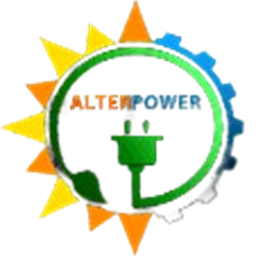

Inverter Dashboard
Initializing application services…
0%
1
Initializing application shell
2
Loading configuration & database
3
Starting dashboard services
Startup Check Required
The application did not finish starting. Verify the local services and try again.
Retry Startup
Connection Mode
The remote gateway did not respond. Choose how to proceed:
⚖
Gateway Mode
Run as a local gateway — poll inverters directly via Modbus.
⇄
Remote Mode
Retry connecting to the remote gateway server.